See where your disk went
Spacescope scans a drive or a folder and draws it as a sunburst you can click through. Open a folder to look inside, tick what you don't need, and move it to the Trash. It is one small program that runs locally and opens in your browser.
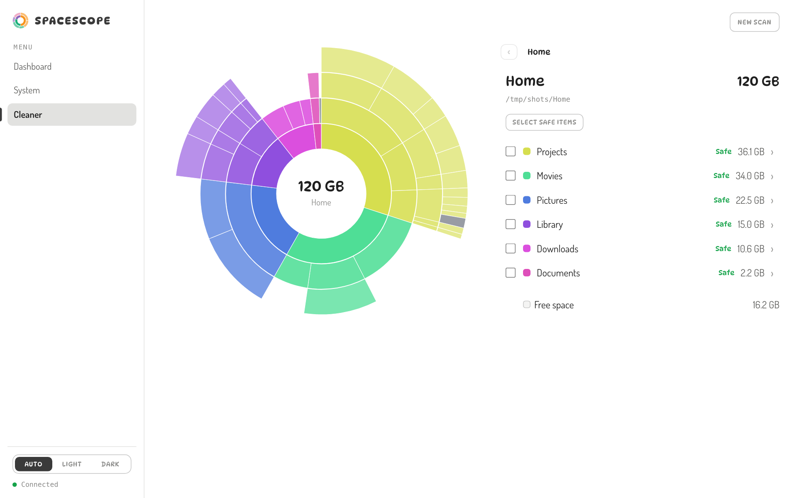
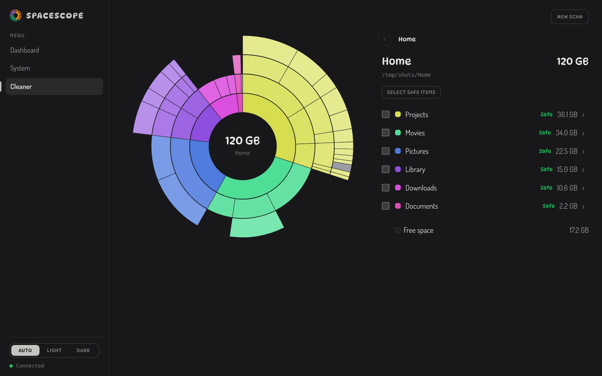
Scan once, then browse instantly
Spacescope is a small Rust program that is both the scanner and the web server. When you start it, it listens on your own machine and opens the page in your browser. Everything you see is drawn from a scan held in memory, so moving between folders doesn't touch the disk again.
-
1
It walks the disk
A pool of worker threads reads directories in parallel. Every file's size is added to its folder, including the small ones you'd never list. Hard links are counted once, symlinks are not followed, and virtual or separate filesystems are skipped so nothing is counted twice.
-
2
It builds the tree
When the walk ends, folder totals are rolled up from the leaves to the root. Each file is also given a category (cache, build output, media and so on) and a flag for whether it is safe to remove.
-
3
You browse and clean
The page asks for one folder at a time and draws it as rings: the folder in the middle, its contents around it, what's inside those further out. Anything you tick can be moved to the Trash from there.
Small parts with one job each
Scanner
src/scannerParallel directory walk with a shared work queue. It can be cancelled at any moment and reports progress as it goes.
Analyzer
src/analyzerClassifies each entry by path and name. Only things that get recreated count as safe: caches, temp files, build output, node_modules, package caches and logs.
Server
src/webAn axum server with a small JSON API and a live progress stream. The whole interface is compiled into the binary.
Interface
src/web/assetsPlain JavaScript modules and hand-drawn SVG charts. No framework and no build step, so there is nothing to install to run it.
What it does
Screenshots on this page are real captures of Spacescope. The folder views use a made-up demo folder so no personal files appear.
Open any folder and look inside
Wedges are sized by how much space they use, and colours follow position so neighbours stay distinct. Hover a wedge to read it out, click a folder to go in, and click the middle to go back up.
The list beside the chart has the same folders with sizes, and a path bar to climb back out. Where you are is in the address bar, so the Back button works and a link opens the same folder.
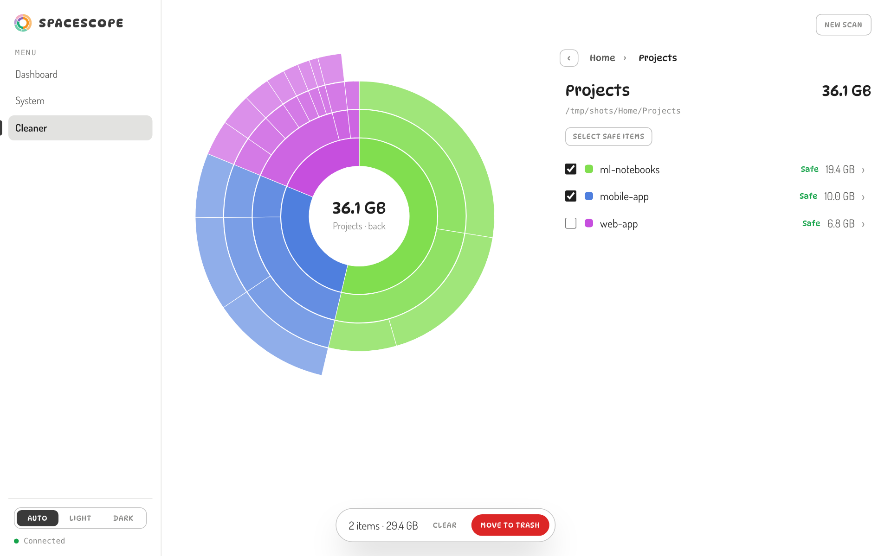
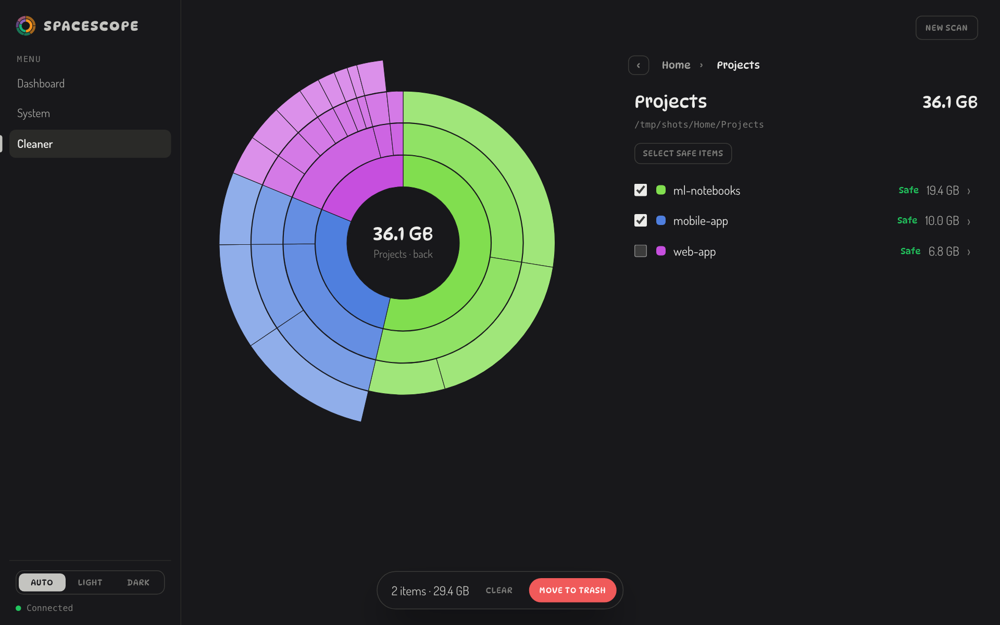
Watch it work, with a percentage
While a scan runs you see files and folders counted, the size found so far, and a live breakdown by category. Progress is a real estimate: a whole-disk scan compares bytes found with the drive's used space, and other scans compare folders read with folders discovered.
It never goes backwards, and it only reaches 100% when the scan has really finished. You can cancel at any time.
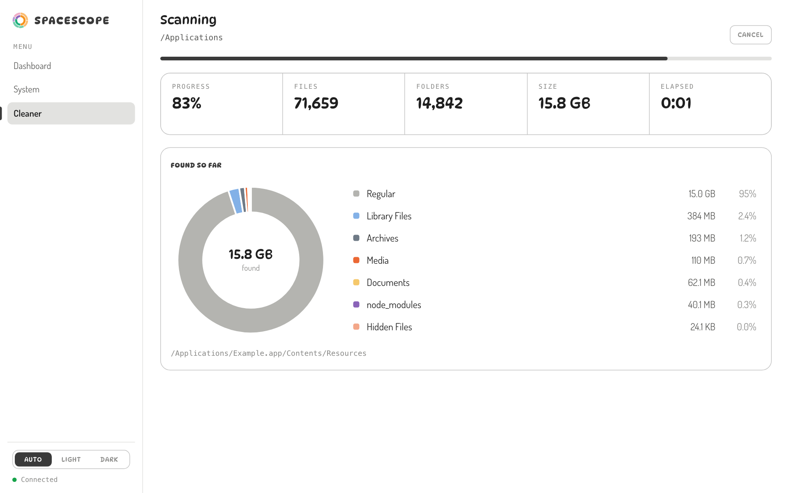
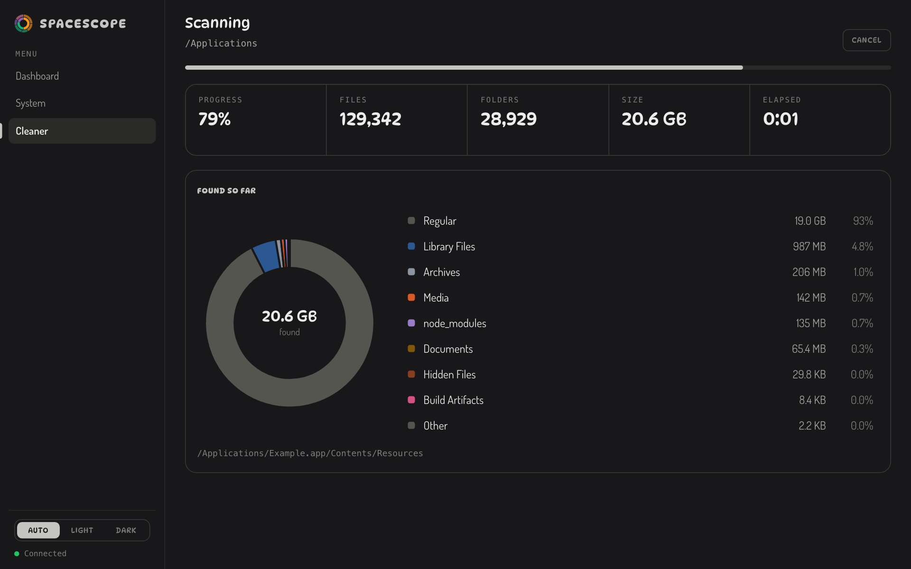
Move things to the Trash, not into the void
Tick anything, including whole folders, and it goes to the system Trash, so you can restore it until you empty it. Your selection carries over as you move between folders.
The first time in a session you confirm once, with a list of what's about to move. After that it doesn't ask again until you quit the program.
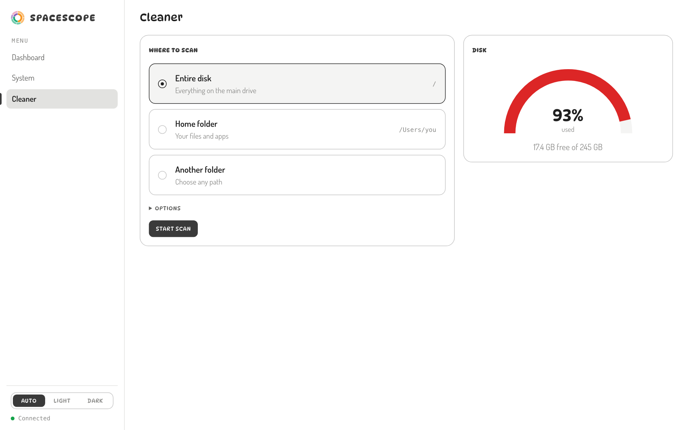
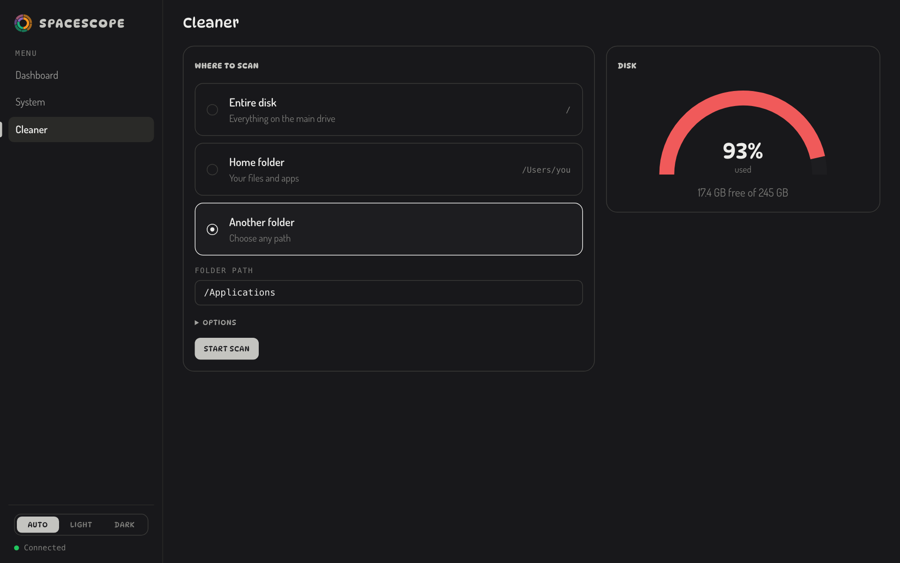
A live dashboard and system page
CPU, memory, network and disk are charted over the last minute and refresh every second. The system page adds per-core load, memory and swap, every disk, and each temperature sensor as a gauge.
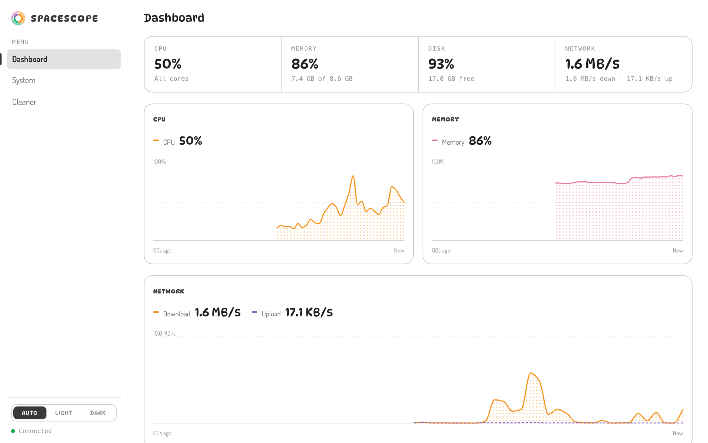
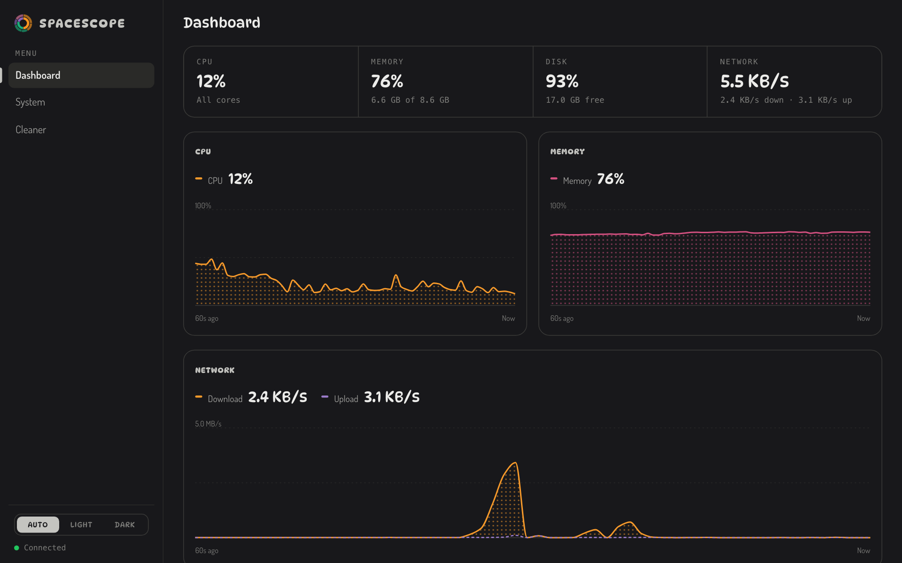
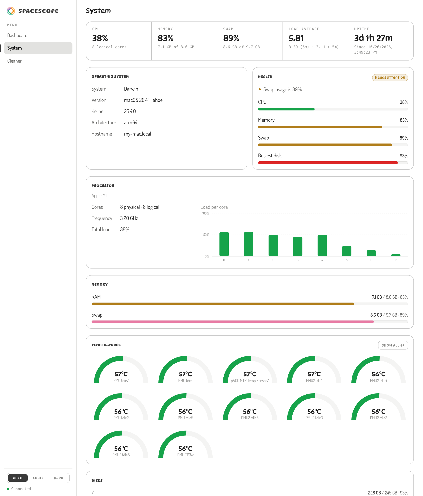
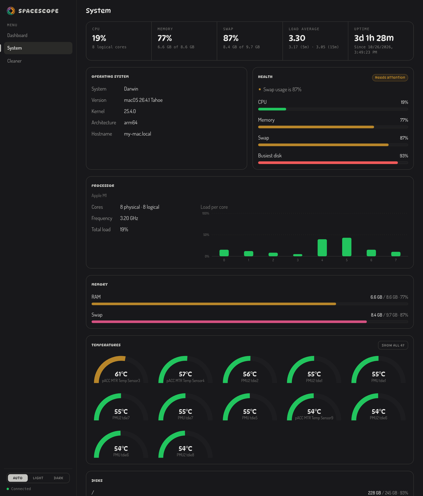
macOS, Linux and Windows
The program has no dependencies at run time, and the interface is a web page, so any system with a modern browser can use it. What changes per system is how disk usage is read, where deleted files go and how the browser is opened.
| System | Disk usage | Delete goes to | Status |
|---|---|---|---|
| macOSApple Silicon and Intel | statfs | The Trash, through the system file manager (no permission prompts) | Developed and tested here, macOS 26 on Apple Silicon. |
| Linuxx86-64 and ARM | statfs | The freedesktop Trash, so you can restore from your file manager | Built and tested in CI on Ubuntu. |
| Windows10 and 11 | Read from the disk list by mount point | The Recycle Bin | Built and tested in CI on Windows. |
| Other UnixFreeBSD and similar | statfs | The freedesktop Trash where it exists | Should build from source with any Rust 1.85+ toolchain. Not tested. |
It can also run on a machine you reach over SSH or on a server: start it with --no-open, forward the port, and open it in your own browser. By default it only accepts connections from the same machine.
From source in one command
You need Rust 1.85 or newer. Building takes about a minute and produces a single executable of a few megabytes.
macOS and Linux
git clone https://github.com/ForkYeahMan/Spacescope cd Spacescope ./install.sh
Installs spacescope into ~/.cargo/bin. Run it from any terminal.
Windows
git clone https://github.com/ForkYeahMan/Spacescope cd Spacescope cargo install --path . --locked
Run it in PowerShell or Command Prompt. Cargo puts spacescope.exe on your PATH.
Any system
cargo install --git https://github.com/ForkYeahMan/Spacescope --locked
Builds straight from GitHub without cloning. Tagged releases also publish ready-made archives for the three systems.
Run it
| Command | What it does |
|---|---|
| spacescope | Starts on port 8080 and opens your browser. Press Ctrl-C to stop. |
| spacescope --home | Pre-selects your home folder in the Cleaner. |
| spacescope --port 9000 | Uses another port. If it's taken, the next free one is used. |
| spacescope --no-open | Doesn't open a browser, for remote machines. |
| spacescope --depth 3 --min-size 10 | Looks three folders deep and lists files of 10 MB or more. |
What it will and won't do
Can it permanently delete anything?
No. Everything goes to the system Trash. Spacescope has no way to empty it or to delete a file outright.
What does "safe to remove" mean?
Only things that a system or tool will recreate: caches, temporary files, build output, node_modules, package caches and logs. Downloads, archives, old files and duplicates are your data and are never pre-selected.
Can it delete system files?
They appear in the chart because they take up space, but they can't be ticked, and the server refuses them even if asked directly. Only paths from the current scan can be deleted, and only inside the folder you scanned.
Does anything leave my computer?
No. There is no telemetry and no account. The server only answers requests addressed to localhost, which also blocks a web page from reaching it by DNS rebinding.
My drive is sold as 256 GB. Why does it show 245 GB?
macOS reports about 245 GB for that drive because the system reserves part of it. Spacescope uses decimal units (1 GB is a billion bytes), the same as Finder and System Settings, so the numbers match what your system says.
Why can't it see all my used space?
Some used space can't be read by a normal program: other volumes, snapshots and purgeable data. On a whole-disk scan, Spacescope shows the difference as "Unscanned space" so the totals add up.
Find the biggest thing first
Free, open source and local. Clone it, run it, and see what's taking the space.